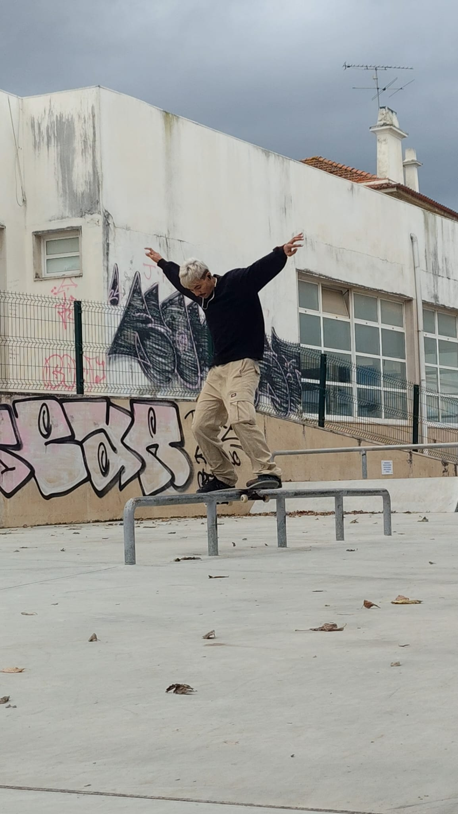

Sobre o autor
O meu nome é Kaiky e sou aluno do curso de Desenvolvimento de Software. Escolhi o tema skate para este projeto por ser uma área do meu interesse. O objetivo deste trabalho foi aplicar conhecimentos de HTML, CSS e JavaScript no desenvolvimento de um website responsivo.